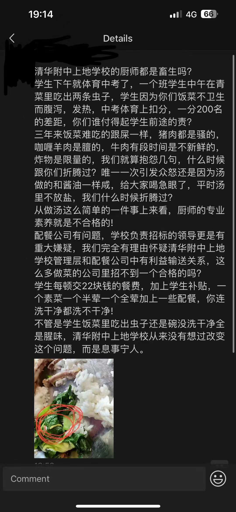

今日，七班一名同学在午餐的青菜中吃到一条菜虫，同学认为学校食品安全存在问题，在朋友圈中抗议。该同学的朋友圈中还反映了猪肉骚、肉不新鲜等问题。目前，XY校长已经介入。本平台没有得到更多消息。
这件事发生前几天，该学校由于把汤做咸，引发众怒，有同学在楼道中发表演讲和抗议。虽然汤的问题得到了解决，但是这件事引发了广大同学对校园食品安全和供餐质量的关注。
事发当天正值体育中考，同学们较为紧张，担心准备过程中出现差错。这件事发生后，同学们担心糟糕的食品会对下午的考试造成影响。
按照中国内陆的《食品安全法》，出现这种情况却未造成食物中毒等恶劣影响的，通常不构成犯罪，但是菜中吃到虫子明显是不符合规定的。由于未对学生身体健康造成过大的影响，学生（家长）应该不会对学校进行民事诉讼，学校不会受到行政处罚。
从生物学的角度讲，菜虫通常不会携带对人体有害的病原体。如果不慎食用，通常只会导致消化不良，如果这位同学对昆虫体内的蛋白质过敏，可能会出现轻微过敏反应。
本平台维护者采访了一名生物老师（该老师不知道这件事发生），该老师认为，我们应该充分相信人体的消化系统可以处理一条菜虫，学生没必要恐慌。
事发当天正值初三学生参加体育中考。据了解，学生预计在当天下午2点从QS出发，前往DXH学校的考点。本次考试总分高达30分。以现在海淀区的中考情况，一分中通常会有100-200人，所以同学们会非常认真地对待每一场考试，不容的任何闪失，这造成同学们有较大的心理压力，此时学校食堂出现问题，很容易导致同学们的恐慌和愤怒。
事发前两天，由于学校发生过针对食堂问题的抗议，食堂和校领导的公信力下降，同学们对食堂的包容度下降，此时学校食堂出现任何差错，都会被无限放大、上升维度。从学生的朋友圈配文可见，学生开始针对负责招标的领导、配餐公司产生怀疑，这足以体现校领导和学校食堂失去了公信力。
失去公信力的问题，不管放在企业身上还是政府身上都是非常严重的问题，这会导致企业或政府说的话不管正确与否，民众都不会相信。世界上已经出现了很多类似问题，就比如房地产问题、YTR问题（本平台严禁讨论）、数据安全问题等。
从目前情况来讲，虽然汤的问题解决了，食堂还是存在菜品几乎完全重复、味道差等问题，这些问题直接导致学生对食堂的评价变差、食堂失去公信力。解决这些问题，要依靠食堂严抓质量的同时做出更丰富的菜品，要依靠校领导不断站在师生立场上向食堂提出建设性意见、要依靠校内建立公开、透明、安全的反馈通道。
这次事件不是什么严重的食品安全事件，但是能反映出学校食堂正在失去好的口碑、失去公信力、学生对食堂和负责招标、验收的领导的极大不满。学校食堂应该尽快提升服务质量、改善服务态度，避免此类事件再次发生、提升同学的获得感、幸福感、安全感。
写完这篇文章自己检查了下，读起来感觉我被威胁了。确实第一次抗议时说的话比较锋利，但是我在海外平台有高度的言论自由，校方和供应链等相关利益方没有监视QS_Digitaltimes,所以我没必要遮遮掩掩。今天晚上看到有人转载吃到虫子的同学的朋友圈，我认真看完了，我个人确实认为没必要上升到过高的高度，这篇文章也是尽量客观描述，大家也没必要因为我说了”影响不大“”不必恐惧“这种词来攻击我。另外，现在XY校长介入了，是一个反馈问题的好机会，建议大家用文明、合理的方式积极反应问题。